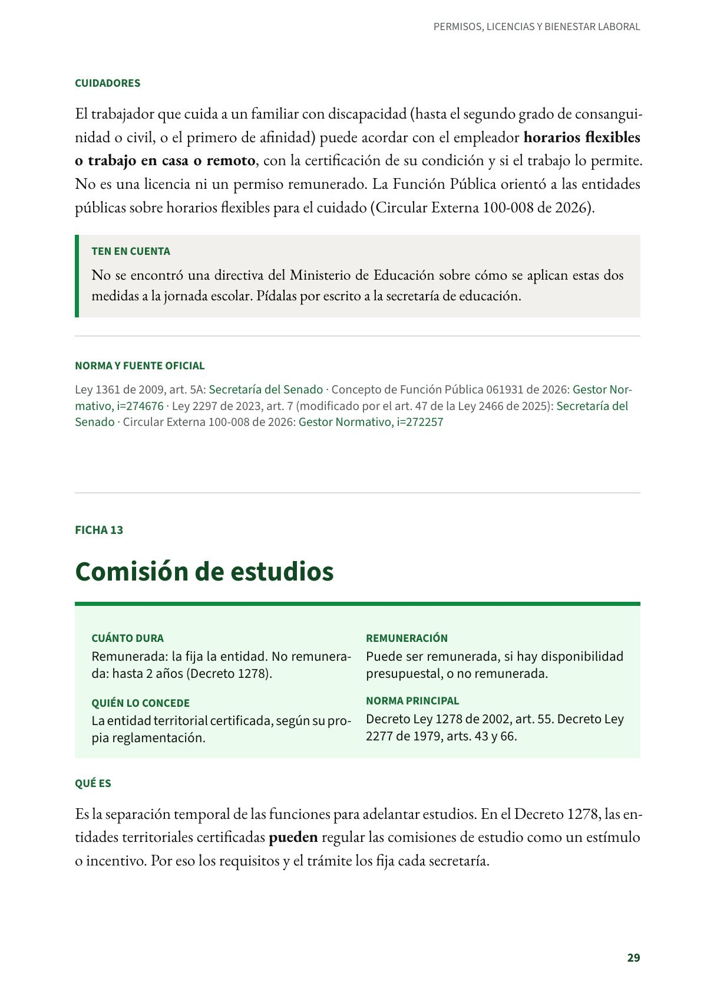
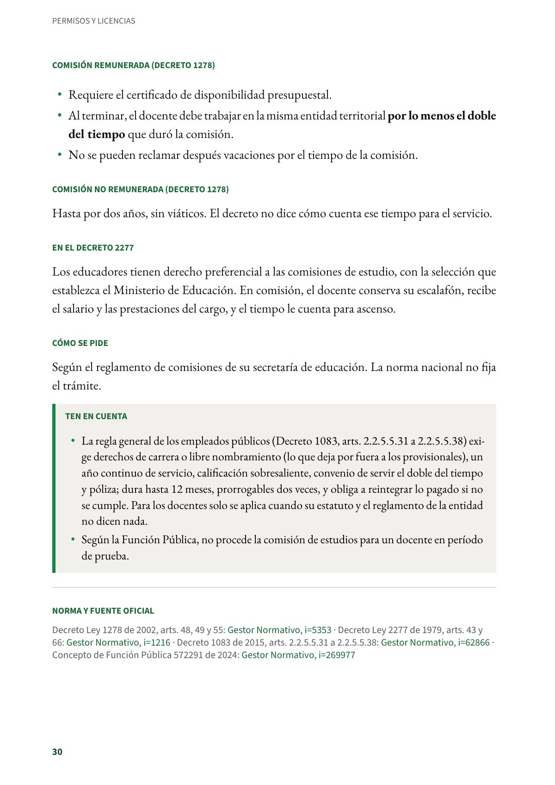

Comisión de estudios
Separación temporal para estudiar, remunerada o no, que regula cada secretaría de educación.
PDF · 2 págs. · 46 KBEn resumen
- Cuánto dura: Remunerada: la fija la entidad. No remunerada: hasta 2 años (Decreto 1278).
- Remuneración: Puede ser remunerada, si hay disponibilidad presupuestal, o no remunerada.
- Quién lo concede: La entidad territorial certificada, según su propia reglamentación.
- Norma principal: Decreto Ley 1278 de 2002, art. 55. Decreto Ley 2277 de 1979, arts. 43 y 66.
Qué es
Es la separación temporal de las funciones para adelantar estudios. En el Decreto 1278, las entidades territoriales certificadas pueden regular las comisiones de estudio como un estímulo o incentivo. Por eso los requisitos y el trámite los fija cada secretaría.
Comisión remunerada (Decreto 1278)
- Requiere el certificado de disponibilidad presupuestal.
- Al terminar, el docente debe trabajar en la misma entidad territorial por lo menos el doble del tiempo que duró la comisión.
- No se pueden reclamar después vacaciones por el tiempo de la comisión.
Comisión no remunerada (Decreto 1278)
Hasta por dos años, sin viáticos. El decreto no dice cómo cuenta ese tiempo para el servicio.
En el Decreto 2277
Los educadores tienen derecho preferencial a las comisiones de estudio, con la selección que establezca el Ministerio de Educación. En comisión, el docente conserva su escalafón, recibe el salario y las prestaciones del cargo, y el tiempo le cuenta para ascenso.
Cómo se pide
Según el reglamento de comisiones de su secretaría de educación. La norma nacional no fija el trámite.
Ten en cuenta
- La regla general de los empleados públicos (Decreto 1083, arts. 2.2.5.5.31 a 2.2.5.5.38) exige derechos de carrera o libre nombramiento (lo que deja por fuera a los provisionales), un año continuo de servicio, calificación sobresaliente, convenio de servir el doble del tiempo y póliza; dura hasta 12 meses, prorrogables dos veces, y obliga a reintegrar lo pagado si no se cumple. Para los docentes solo se aplica cuando su estatuto y el reglamento de la entidad no dicen nada.
- Según la Función Pública, no procede la comisión de estudios para un docente en período de prueba.
Norma y fuente oficial
Decreto Ley 1278 de 2002, arts. 48, 49 y 55: Gestor Normativo · Decreto Ley 2277 de 1979, arts. 43 y 66: Gestor Normativo · Decreto 1083 de 2015, arts. 2.2.5.5.31 a 2.2.5.5.38: Gestor Normativo · Concepto de Función Pública 572291 de 2024: Gestor Normativo
Así se ve en el libro
2 páginas
